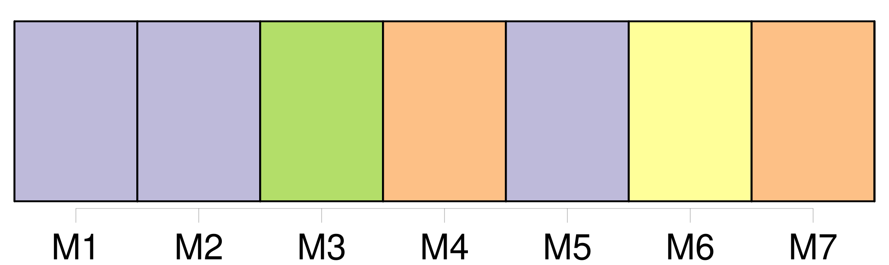
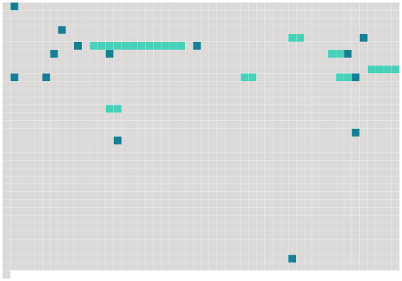

Longueur nb maillons : 21 mentions |
 |
VII [5 phrases]
Moins clairvoyant, oubliant le vertige même auquel j'avais voulu échapper, je vécus à [Aden] , « ville célèbre et ancienne ». [1 phrases] Elle a été capitale d'un royaume dont le Turc s'est emparé il y a près de six-vingt ans, comme il fit en même temps [d'Aden] , en faisant pendre le roy de [celle-cy] au mast de son navire et couper la tête à l'autre. [Aden] est [la plus belle ville et la plus agréable de toute l'Arabie] : [elle] est fermée de murailles du côté de la mer et de montagnes du côté de la terre. [1 phrases] [Elle] a bien six mille maisons. [Elle] est assise au dehors de la mer Rouge et au commencement de la grande mer. » Quelle impatience lorsque je lisais à Paris des histoires sur [la ville] [où] je devais vivre, trois ou quatre mois avant mon départ : de ma chambre j'entendais les enfants crier dans la rue d'UIm : « chat perché » disaient -ils. [4 phrases]
Et voici [ce lieu si beau] qu' [il] fait mourir. [Aden] est un grand volcan lunaire dont un pan a sauté avant que les hommes fussent là pour inventer des légendes sur l'explosion de [cette poudrière]
Ils ont fait la légende après : le réveil [d'Aden] [dont] les galeries conduisent à l'enfer annoncera la fin du monde. [3 phrases] dit Reclus, des milliers de poissons morts de toute espèce sont rejetés par la vague sur les côtes de Périm et [d'Aden] [4 phrases]
[Aden] fut toujours marché et place forte : emporium, vetissumum oppidum Aden, dit Claude Morisot en 1663. [Aden] bourdonne comme un grand animal rugueux couvert de mouches et de taons, roulé dans la poussière. [29 phrases] [Aden] , il n'y a pas si longtemps, était une station de charbonnage ; les chaudières à mazout ont amené à leur suite des citernes noires de l'Anglo-Persian et de l'Asiatic Petroleum, des bureaux, des docks, des intrigues qui trouble et le cœur des petits souverains indigènes devenus marchands d'huile et acheteurs d'essence pour autos. |
 |
Il est possible de télécharger la ressource sur la page Ortolang |
Si vous avez des questions ou vous voyez des erreurs, merci d'envoyer un mail à silvia.federzoni89@gmail.com |